Gauja Lab
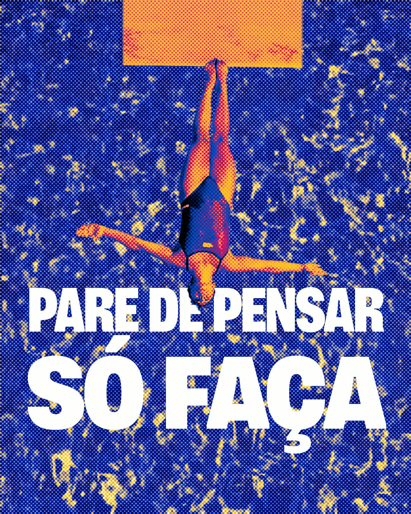
Somos a Gauja Lab
Gauja Lab es el estudio creativo donde desarrollé proyectos como Wotë y Refiore. Para sus propias redes creamos una línea editorial con humor y cultura pop, que habla a otros emprendedores sobre creatividad, clientes y ventas.
- Desafío
- Mostrar la personalidad del estudio en un feed donde las agencias se parecen entre sí, y atraer clientes hablando del día a día sin sonar a anuncio.
- Solución
- Fotografía recortada en semitono violeta y amarillo, titulares en una sans condensada pesada y temas que mezclan oficio y cultura pop: del cliente difícil a los mundiales de fútbol, siempre con una lección para quien vende un producto.
- Mi rol
- Dirección creativa · Diseño · Estrategia de contenido.
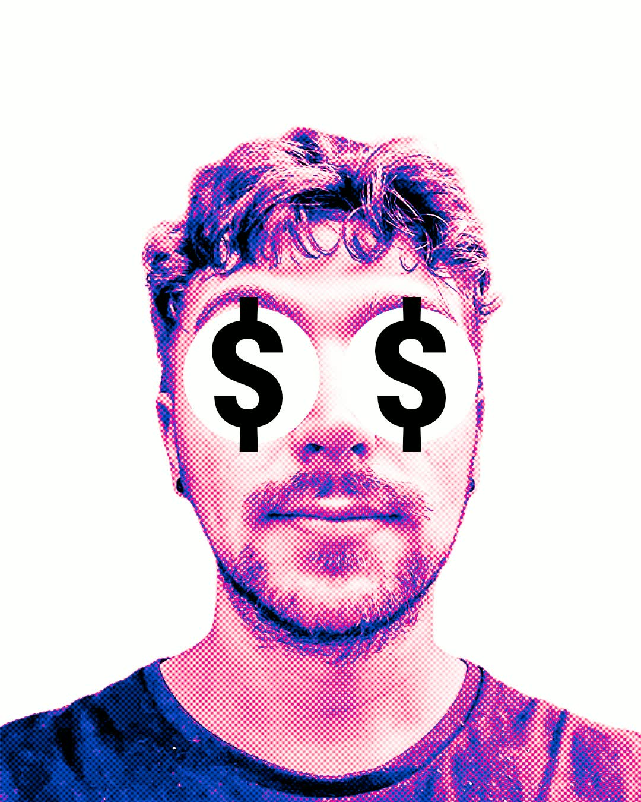
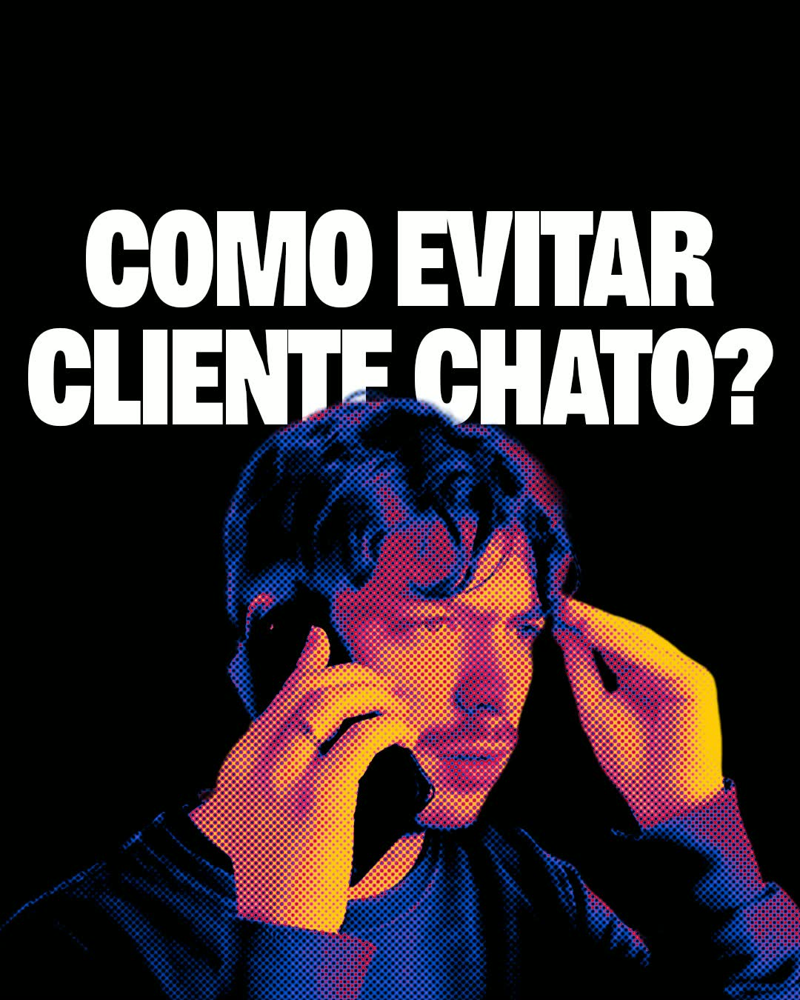
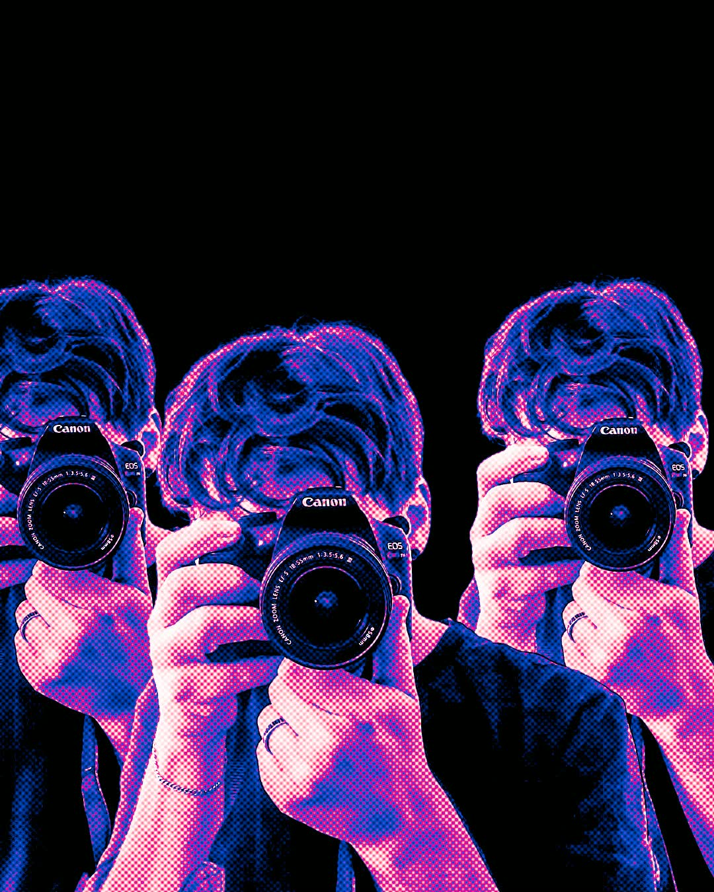
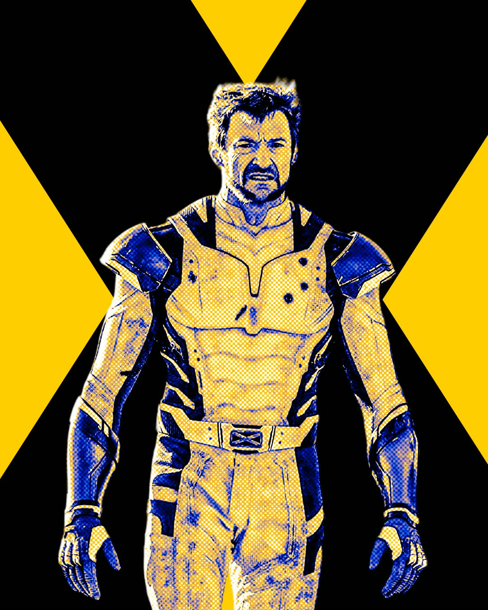
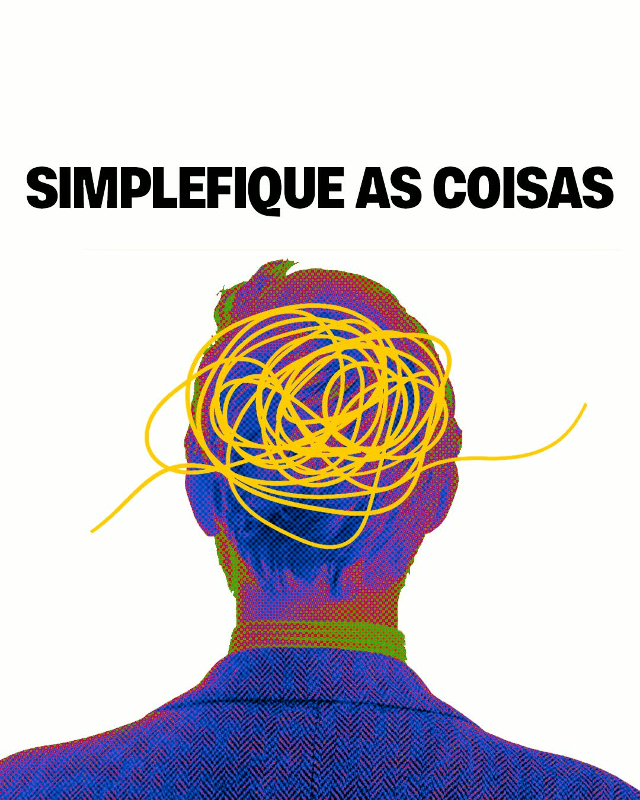
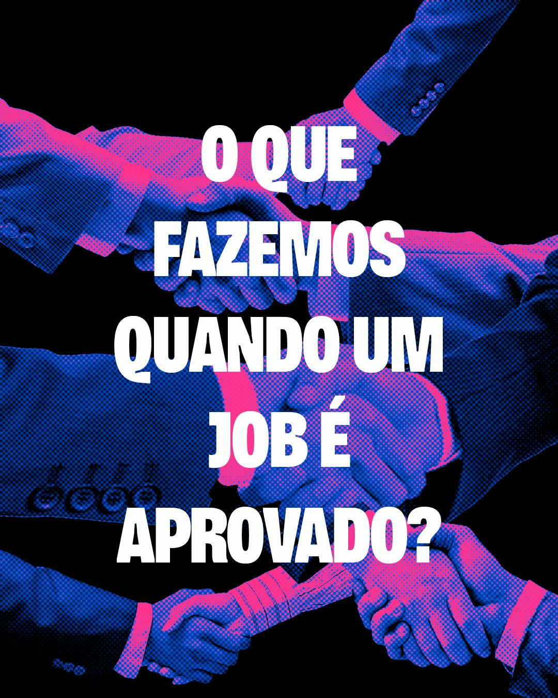
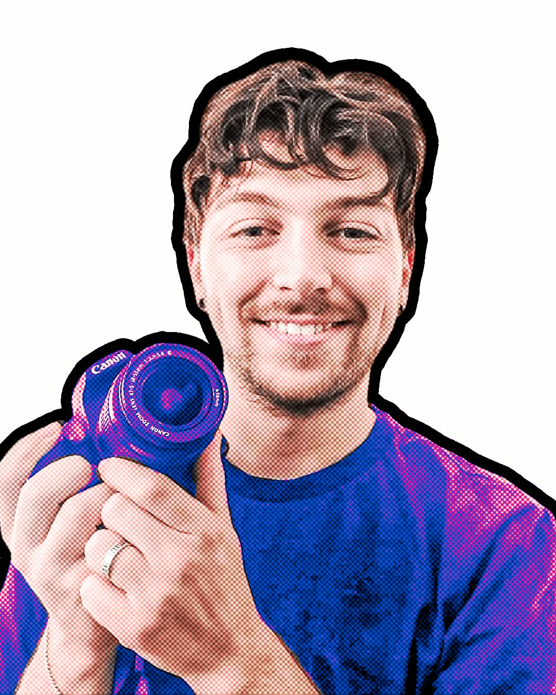
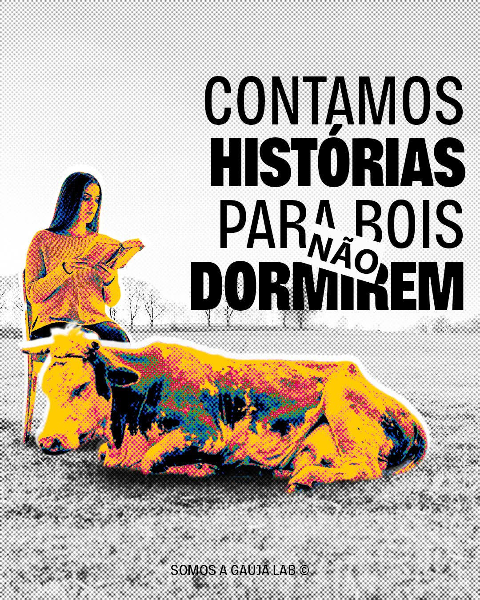
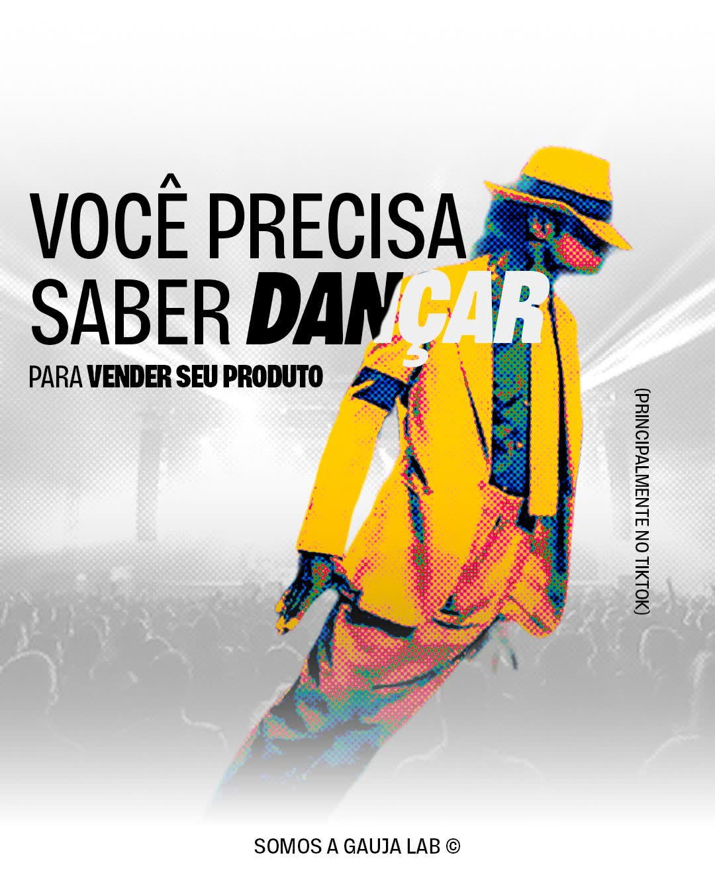
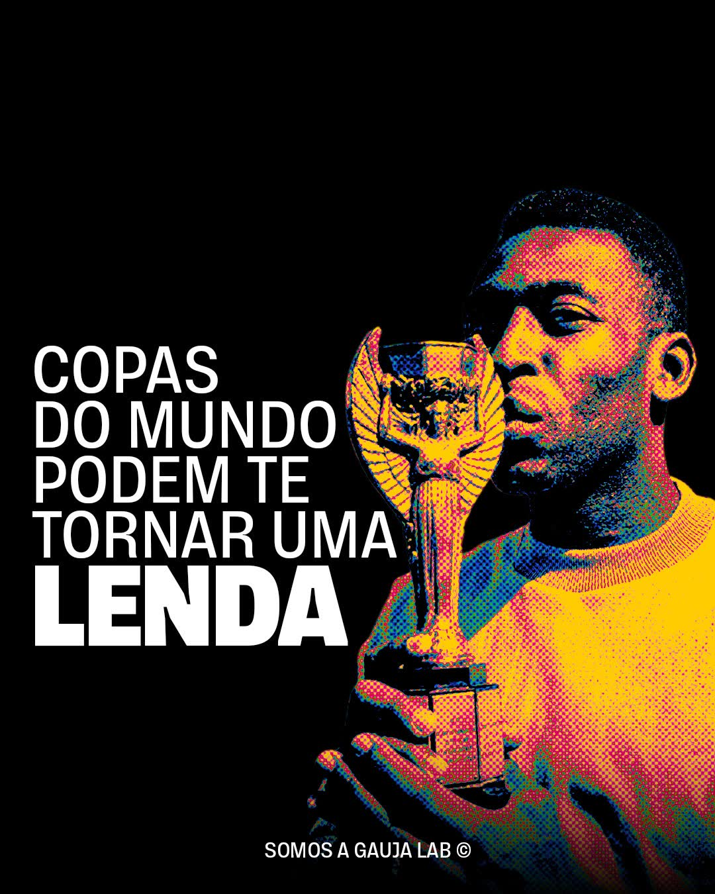
Créditos
Cliente
Gauja Lab
Año
2023
Mi rol
Dirección creativa · Diseño · Estrategia de contenido